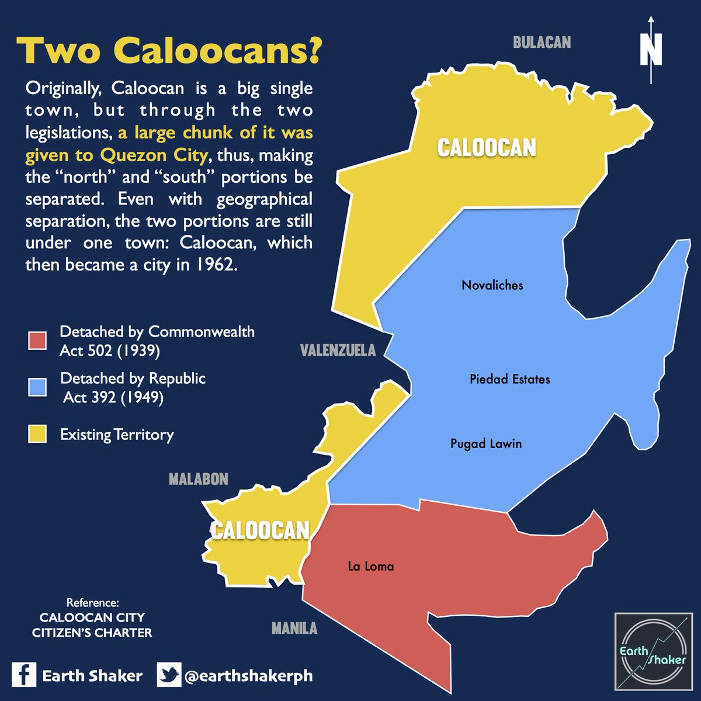
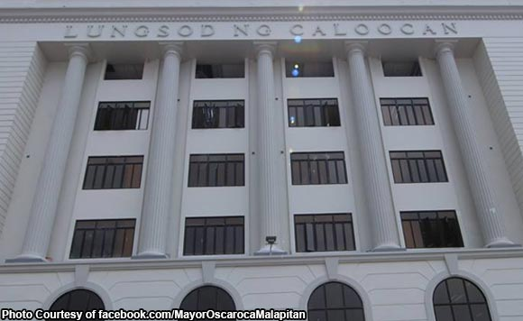

Caloocan was first called Aromahan or Libis Espina by the Spanish colonizers as it was located in a libis when It was just a small barrio in tondo. According to some folk tales, aws derived from the tagalog root word “lo-ok” (bay) attributed to its nearness to Manila Bay. While others belived that it came from the work “sulok” (corner) because in the past Caloocan was located at the corner where the old towns of Tondo and Tambobong (Malabon) met. Hence, the word Caloocan is a play of the tagalog word “kasuluk –sulokan” (or kaloob-looban) which means “innermost area”
North Caloocan

North Caloocan shares its border with Quezon City, Valenzuela and Marilao, Meycauayan and San Jose del Monte in the province of Bulacan. It is composed of mostly residential subdivisions and extensive resettlement areas with scattered distribution of industrial estates mostly within road transit points and intersections.
South Caloocan

South Caloocan is bordered by Manila, Quezon City, Malabon, Navotas and Valenzuela. Presence of commercial and industrial activities combined with residential areas make it a highly urbanized central business district and a major urban center in the Northern District of Metropolitan Manila. North Caloocan shares its border with Quezon City, Valenzuela and Marilao, Meycauayan and San Jose del Monte in the province of Bulacan. It is composed of mostly residential subdivisions and extensive resettlement areas with scattered distribution of industrial estates mostly within road transit points and intersections.
References:
- https://en.wikipedia.org/wiki/Caloocan
- https://caloocancity.gov.ph/departments-offices1/26-about-us/26-history-of-caloocan
- http://dokumentaryonijuantagalog.weebly.com/caloocan.html
- https://fitnessfashioninquirerlifestyle.blogspot.com/2018/12/why-caloocan-city-consists-of-two.html
- http://caloocan-flat.blogspot.com/2011/09/makasaysayang-lungsod-ng-caloocan.html?m=1
- http://www.caloocancity.gov.ph/about-us/history?fbclid=IwAR3lmE89F-rC-3eudbcCt9FYugIwYD0u1PQHo30rR7mCpWApppk263B42Ng
- https://lakansining.wordpress.com/2017/07/12/quezon-city-exploring-novaliches/
- https://newsinfo.inquirer.net/488987/largest-barangay-in-ph-cant-live-up-to-new-hope-image-split-pushed#:~:text=%E2%80%9CThis%20barangay%20was%20established%20during,%2C%20and%20San%20Juan%20City.%E2%80%9D
- http://wikimapia.org/12836127/Sangandaan
- https://kahimyang.com/kauswagan/articles/1671/the-legend-of-maypajo